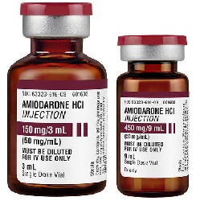

Amiodarone HCL (Cordarone, Pacerone) အေၾကာင္းသိေကာင္းဖြယ္ရာ အျဖာျဖာ

Amiodaroneဆိုတာဘာလဲ?
-Amiodarone ဆိုတာ ႏွလံုးခုန္မျမန္ျခင္း အတြက္ေဆး တစ္မ်ိဳးျဖစ္ပါတယ္။ ႏွလံုး ခုန္ မမွန္ကန္မႈ ကိုျဖစ္ေစေသာ လွ်ပ္စစ္ဓာတ္ကိုတားဆီးေပး ေသာေဆးျဖစ္ပါတယ္။
ေဆးကိုဘယ္ေနရာေတြမွာ သံုးလဲ?
-Amiodarone ကို ျပင္းထန္ေသာ(အသက္အႏၲရယ္ရွိသည္အထိ ပိ ုျပင္းထန္ႏိုင္ေသာ) ႏွလံုးခုန္ႏႈန္း မမွန္သည့္ေရာဂါမ်ား(ဥပမာ – ႏွလံုး ေသြးျပန္ခန္း မွ ၾကာရွည္ ခုန္ႏႈန္း မမွန္ျခင္း/ ႏွလံုးခုန္ျမန္ျခင္း ) တို႔မွာသံုးပါတယ္။ ႏွလံုးခုန္ႏႈန္း ပံုမွန္ျဖစ္ေစရန္ ႏွင့္ ပံုမွန္ႏွလံုးခုန္ ႏႈန္း ကိုထိန္းသိမ္း ရန္လည္း သံုးေလ့ရွိပါတယ္။
ေဆးရဲ႕ဆိုးက်ိဳး ဘာေတြရွိလဲ?
–မူးေဝ၊ ပ်ိဳ႕အန္၊ ဝမ္းခ်ဳပ္ျခင္း၊ ခံတြင္းပ်က္ျခင္း၊ ကတုန္ကယင္ျဖစ္ျခင္း၊ ေမာပန္းလြယ္ျခင္း တို႔ျဖစ္တတ္ပါတယ္။ ျပင္းထန္ေသာ ဆိုးက်ိဳးမ်ား ႏွင္ ့ အလြန္ျပင္းထန္ေသာ ဆိုးက်ိဳးမ်ားမွာ ေသြးထြက္/ေသြးေျခဥလြယ္ျခင္း၊ ေျခ/လက္ ထံုက်င္ျခင္း၊ ထိန္ခ်ဳပ္ရခက္ျခင္း၊
မူမမွန္လႈပ္ရွားမႈမ်ားျဖစ္ျခင္း၊ ႏွလံုးေရာဂါလကၡဏာျဖစ္ျခင္း/ပိုဆိုးလာျခင္း (ဥပမာ ေျခ/လက္ ေဖာေရာင္ျခင္း)၊ လွဲေလ်ာင္းလွ်င္ အသက္ရွဴၾကပ္လာျခင္း၊ ႏွလံုးခုန္ႏႈန္းျမန္/ေႏွး/ပို၍မမွႏ္ုုျဖစ္ျခင္း၊ အလြန္အမင္းမူးေဝျခင္း ႏွင့္ သတိလစ္ျခင္းတို႔ျဖစ္တတ္ပါတယ္။ အဆိုပါလကၡဏာမ်ား ျဖစ္လွ်င္ အႏၲရာယ္ရွိသျဖင့္ နီးစပ္ရာေဆးခန္းသို႔အျမန္ဆံုးျပပါ။ ေဆးမတည့္ျခင္း၊ တိုင္းရြိတ္ေရာဂါ ႏွင့္ အျမင္ေဝဝါး ျခင္းျဖစ္ႏိုင္ေသာ္လည္းရွားပါတယ္။
ေဆးေသာက္လွ်င္ဘာေတြသတိထားရမလဲ?
–ေဆးမတည့္ျခင္း၊အဆုတ္ေရာဂါ၊တိုင္းရြိတ္ေရာဂါ ရွိ/မရွိ ဆရာဝန္ကိုႀကိဳေျပာသင့္ပါတယ္။ Amiodaroneသည္ ႏွလံုးခုန္ႏႈန္းကိုေျပာင္းလဲေစေသာ အေျခအေနတစ္ရပ္ (ECG တြင္ QT ရွည္ျခင္း) ကိုျဖစ္ေစတတ္ပါတယ္။ အဆိုပါအေျခအေနသည္ ဆီးေဆးမ်ားသံုးထားျခင္း၊ ႏွလံုးေရာဂါ အခံရွိျခင္းစေသာ လူနာမ်ားတြင္ပိုဆိုးေစေသာေၾကာင့္ ဆရာဝန္အား ႀကိဳေျပာကာတိုင္သင့္ပါတယ္။ မူးေဝျခင္းကို ပိုဆိုးေစေသာေၾကာင္း ေဆးေသာက္ၿပီး ကားမေမာင္းသင့္ပါ။ အရက္လည္းေလွ်ာ့ေသာက္ရပါမယ္။
ကိုယ္ဝန္ေဆာင္မ်ား အေနျဖင့္လည္း ေမြးလာမယ့္ ကေလးအားထိခိုက္ေစႏိုင္ေသာေၾကာင့္ ဆရာဝန္ႏွင့္ ေသခ်ာတိုင္ပင္ျပီးမွ ေသာက္သင့္ပါတယ္။ ႏို႔တိုက္မိခင္မ်ား အတြက္လည္း ကေလးအတြက္ အႏၲရာယ္ရွိသျဖင့္ မေသာက္သင့္ပါ။
ေဆးအာနိသင္ဘယ္လိုရွိလဲ?
-Finglimod, အသည္းေရာင္အသားဝါစီပိုး အတြက္ေဆးမ်ား (ledipasvir/sofoabuvir, sofosbuvir) တို႔ႏွင့္ တြဲေသာက္လွ်င့္ အာနိသင္ေျပာင္းႏိုင္သျဖင့္ မေသာက္သင့္ပါ။ Dofetilide,pimozide, procainamide, quinidine, sotalol, macrolide ပိုးသတ္ေဆးမ်ား (ဥပမာ clarithromycin, erythromycin) , quinolone ပိုးသက္ေဆးမ်ား (ဥပမာ levofloxacin) တု႔ိ ႏွင္တြဲေသာက္လွ်င္ ႏွလံုးခုန္ မမွန္ (QT ရွည္ျခင္း) ကို ပိုဆိုးေစေသာေၾကာင့္ တြဲမေသာက္ရပါ။
Amiodarone မွာ Clopidogrel, phenytoin, အဆီက်ေဆးမ်ား (ဥပမာ atorvastatin , lovastatin ), trazodone, warfarin တို႔အား ခႏၲာကိုယ္မွ စြန္႔ထုတ္ မႈကိုတားဆီးေစတတ္သျဖင့္ သတိထားသင့္ပါတယ္။
ေဆးေသာက္လြန္လွ်င္ဘာျဖစ္ႏိုင္လဲ?
–ႏံုးခ်ိေပ်ာ့ေခြ အားမရွိျခင္း၊ အလြန္အမင္းမူးေဝျခင္း၊ ႏွလံုးခုန္ႏႈန္း အလြန္ေႏွးျခင္း ႏွင့္ သတိလစ္ျခင္း တို႔ျဖစ္ႏိုင္ကာ အသက္အႏၲရယ္ရွိသျဖင့္ အျမန္ဆံုး အေရးေပၚေဆးကုသမႈခံယူသင့္ပါတယ္။
* အထူးသတိျပဳရန္မွာ Amiodarone သည္ ႏွလံုးခုန္ မမွန္ျခင္းလူနာမ်ားအတြက္အက်ိဳးမ်ားေသာ္လည္း ရံဖန္ရံခါ ေရာဂါအေျခအေနကို ပိုမိုဆိုးရြားေစသျဖင့္ ေဆးစေသာက္လွ်င္ ေဆးရံုတြင္ ေနကာ ေစာင့္ၾကည့္မႈခံယူသင့္ပါတယ္။ ထို႔အျပင္ Amiodarone သည္ ခႏာၱကိုယ္ထဲတြင္ အပတ္ မွ လ သို႔ ၾကာၾကာ ေနႏိုင္သျဖင့္ ဆိုးကိ်ဳးလကၡဏာမ်ား သည္ ေဆးျဖတ္ၿပီး အခ်ိန္ၾကာမွ ေပၚလာႏိုင္သည္ကိုသတိထားသင့္ပါတယ္။ *